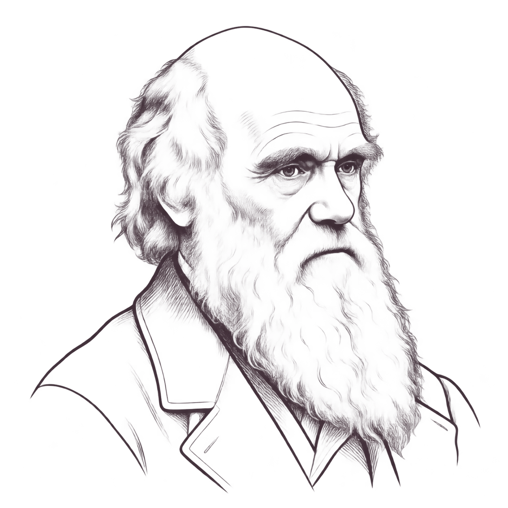
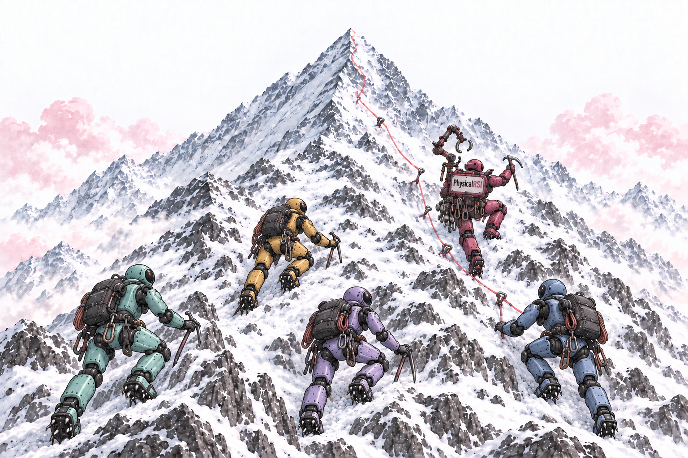
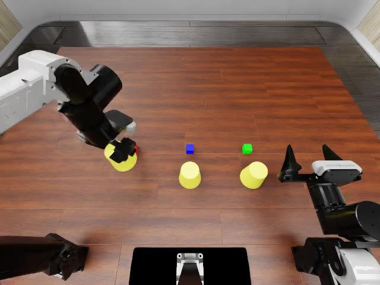
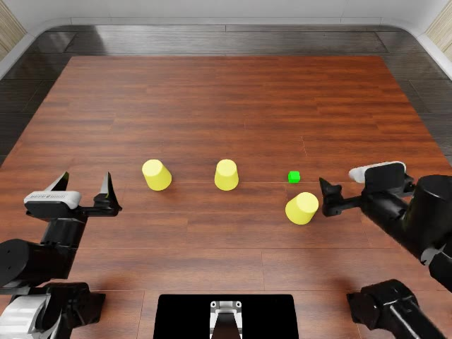
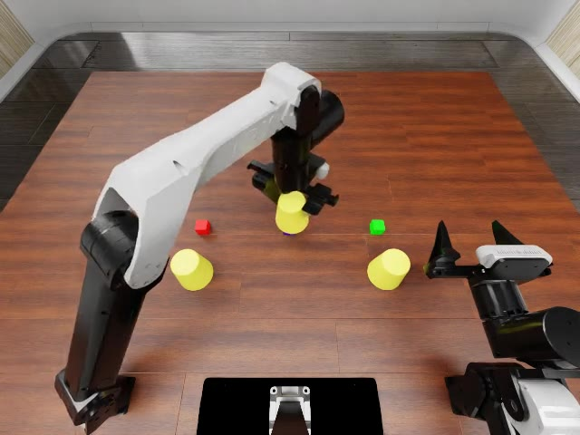
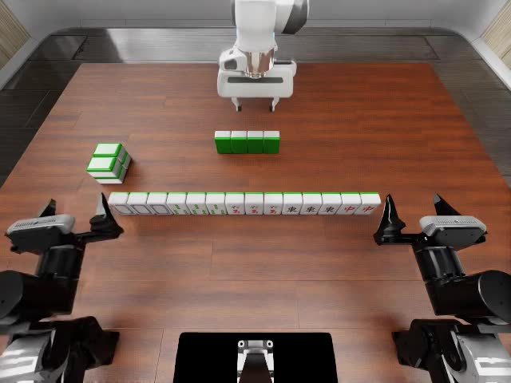

GPT-as-policy
(slow and expensive)

From so simple a beginning endless forms most beautiful and most wonderful have been, and are being, evolved
从如此简单的开端，无穷无尽、最美丽而又最奇妙的形态，已经并且正在演化。

With its diverse manipulation tasks, RoboDojo is our Everest for embodied AI. As of , PhysicalRSI ranks #1 on the RoboDojo-Sim leaderboard. We use RoboDojo as the main testbed to illustrate PhysicalRSI throughout what follows.
(slow and expensive)
(compounding error & OOD everywhere)
(efficient and open-world generalizations)
The agent uses embodied feedback to rewrite its own harness. Validated edits become the harness it uses next.
Use your harness. Rewrite it. Run with it again.
H[0] = initial_harness()Startfor k in range(budget): A[k] = Agent(F, H[k])S2 + H plan = A[k].understand(task)S2 τ[k] = H[k].execute(plan)S1 variants = A[k].rewrite_many(H[k], τ[k])S2 → H pool = [Agent(F, h) for h in variants]Candidates survivor = select_on_eval([A[k], *pool])Selection H[k+1] = survivor.harnessInheritImprove = vary → evaluate → select → inherit.
“Everything should be made as simple as possible,
but no simpler.”
System 2 revises H. The editable harness H is the code that routes tasks, invokes skills and tools, and manages state. System 1 runs H with skill models and episode state to act through the Physical API.
Swipe to explore →




+ Success patterns− Failure lessons
Reflect on both.
Revise the harness.
Code for the execution layer
Perceive the current layout
Success patterns
Failure guards
Action chunks → robot control

Find four matching tiles.
No selection. Diagnose the miss.
tiles = perceive(rgb)
quad = match_four(tiles)
for tile in quad:
pick_and_place(tile)Revise recognition & tile handling.
Four of a kind. Keep the improvement.
Keep the skill. Refresh the state.
def fold_sleeve(arm, pick, place):
arm.move_above(pick)
home = arm.joints().copy()
arm.move_to(pick)
arm.close_gripper()
arm.move_above(place)
descent = [arm.joints().copy()]
for q in arm.lower_to(place):
descent.append(q.copy())
arm.open_gripper()
for q in reversed(descent):
arm.move_joints(q, step=0.12)
arm.move_joints(home, step=0.12)| Model | Average | Generalization | Memory | Precision | Long Horizon | Open |
|---|---|---|---|---|---|---|
| PhysicalRSILocal evaluation | 38.3 | 19.7 | 52.6 | 43.2 | 46.6 | 29.1 |
| π₀.₅Historical reference | 11.0 | 11.4 | 5.9 | 12.4 | 23.5 | 2.0 |
| π₀.₅ + sparse memoryHistorical reference | 15.6 | 10.5 | 18.5 | 20.1 | 26.5 | 2.3 |
| GPT-6 AstraHistorical reference | 28.9 | 32.8 | 43.0 | 12.7 | 21.4 | 34.4 |
| DM0.5Historical reference | 24.0 | 11.3 | 47.7 | 24.8 | 33.7 | 2.4 |
| Liber-0 LiteHistorical reference | 27.7 | 17.9 | 35.7 | 36.6 | 45.5 | 3.1 |
Official RoboDojo leaderboard ↗ · 28 Sep 2026 edition · Best by overall score
Randomized number arrangement: find the digits, then build the largest number.
Independent rollouts · 1×
Cover every block, then reveal red → green → blue.
Independent rollouts · 1×
Exchange both positions and orientations without blocking the next move.
Independent rollouts · 1×
SR 25.3%Score 37.1
SR 100.0%Score 100.0
SR 93.3%Score 93.3
SR 85.3%Score 85.3
SR 61.3%Score 61.3
SR 40.7%Score 49.6
SR 65.3%Score 77.9
SR 89.3%Score 89.3
SR 86.7%Score 86.7
SR 42.7%Score 57.9
SR 10.7%Score 25.1
SR 39.3%Score 39.3
SR 51.3%Score 58.4
SR 32.0%Score 32.0
SR 92.7%Score 97.6
SR 44.0%Score 44.0
SR 25.3%Score 25.3
SR 65.3%Score 65.3
SR 57.3%Score 65.1
SR 66.7%Score 70.5
SR 22.7%Score 29.7
SR 19.3%Score 19.3
SR 70.0%Score 81.1
SR 1.3%Score 14.5
Goal Fold both sleeves, then fold the hem up.
Recorded attempts play as one continuous video.
Video could not load.
Scores are native reward × 100; success rates count explicit successful episodes. The result summary averages tasks within each category, then averages the five categories. Generalization requires both standard and random halves. All comparison bars use the same 37 complete merged tasks. VLA/WAM representatives are selected by overall score on the full official board, then recomputed on this task subset. The 28 Sep edition uses the official data fetched on 27 Sep; source timestamps and full-board values are preserved in the download. Local aggregation reproduces the archived 38.25 score / 33.01% SR macro result.
All values and provenance · Video provenance · Comparison footage · Official leaderboard snapshot · Evaluation report · Per-seed results